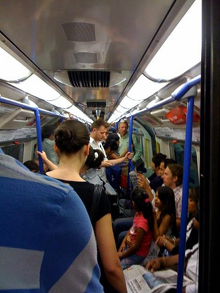
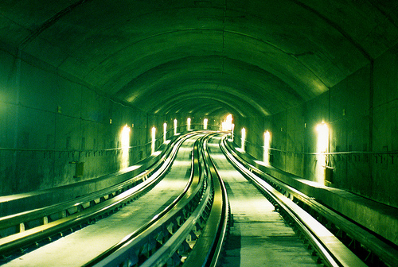

La ventilación en el metro de la ciudad de México
Uno de los problemas que afectan al “Sistema de Transporte Colectivo Metro” es su inadecuada ventilación. La tarea de mantener condiciones comfortables de ventilación y ruido en el metro no es una tarea simple. En los vagones más recientes la ventilación ha sido mejorada, pero no es buena en los vagones de mayor antigüedad, donde con una ventilación insuficiente, el viaje resulta incómodo. 
Las cargas de calor y la comodidad de los usuarios
Se considera que en cada vagón se transportan aproximadamente de 200 a 249 personas durante las horas pico. Las multitudes generan calor, lo que incomoda a los usuarios. Estas cargas de calor, sumadas a el calor del tren y del ambiente que se infiltran al vagón, constituyen la carga de enfriamiento total que debe proporcionarse para mantener la comodidad de los usuarios.
La carga total de enfriamiento es un factor difícil de determinar debido a que el cálculo de la carga de enfriamiento depende del calor generado por la fricción del sistema de frenos y el efecto de 'almacenamiento de calor' o inercia térmica que se produce en los túneles de concreto. Los túneles pueden llegar a tener una masa calor de apróximadamente 20 toneladas por metro de túnel, y un calor específico de 0.2 kcal/kg˚C. Además, los túneles pueden mantener el calor por varias horas. El sistema de ventilación que existe en el túnel no es de mucha utilidad.
En las paradas de los vagones del metro, los sistemas de frenos usan motores eléctricos generen energía. Los motores eléctricos son enfriados por ventiladores que también generan calor. La luces y los ventiladores internos en los túneles son otras fuentes en la generación de calor. Además, se debe tener en cuenta que la atmósfera de un lugar cerrado (como en el metro) puede parecer pesada debido a la ausencia de variación en las corrientes de aire. Las variaciones de las corrientes de aire ayudan a que un sitio sea más fresco.
Para el diseño del metro se consideró una carga de diez personas/m² de pie y 39 personas sentadas. Para el flujo de ventilación se instalan siete ventiladores en el techo de cada vagón. Según se reporta en las pruebas de laboratorio o de banco, cada ventilador puede producir 3200 m³/h, por lo que se garantizaría un suministro mínimo de 1,800 a 2,00 m³/h, es decir, de 14,000 m³/h con una velocidad recomendada de 0.4 a 1.5 m/s, (1,440 a 5,400 m/h).
Problemas de ventilación y los ventiladores
En los trenes antiguos, la ventilación es prácticamente inútil, ya que los flujos de aire no llegan a los pasajeros. No obstante, aún en los trenes modernos con mejores sistemas, la ventilación varía excesivamente de punto a punto y de vagón a vagón. En la mayoría de los ventiladores, la velocidad de viento varía entre 0.1 m/s y 2.3 m/s. Al parecer, el problema más importante de ventilación en el metro no radica en la entrada de aire, sino en su extracción y circulación adecuadas. Por ejemplo, las rejillas de extracción no son suficientes para manipular el aire y son prácticamente inútiles. Otro problema es la falta de operación de los ventiladores. En promedio, dos de los siete ventiladores de cada vagón no funcionan. 
Buena ventilación
Dos fenómenos que contribuyen a la buena circulación de aire en el metro son el efecto pistón y la apertura de puertas. El efecto pistón se observa cuando se tiene un tren circulando en sentido contrario. El aire que se produce por el acercamiento entra a través de las ventanillas del vagón. También, al abrir las puertas se tiene una sensación de frescura, a pesar de que la temperatura de la estación sea sólo uno o dos grados inferior a la del vagón. Esto ocurre debido a que el aire puede salir libremente, e indica que no es la entrada, sino la falta de extracción y de circulación del aire lo que impide la ventilación adecuada.
En general, se puede mejorar la ventilación en los vagones del metro tomando medidas que ayuden a la extracción del aire. Aunque los trenes nuevos tienen sistemas de ventilación más adecuados, su mantenimiento es costoso porque debe hacerse individualmente, incluyendo la labor especializada de balanceo, que requiere tiempo, herramientas y experiencia.